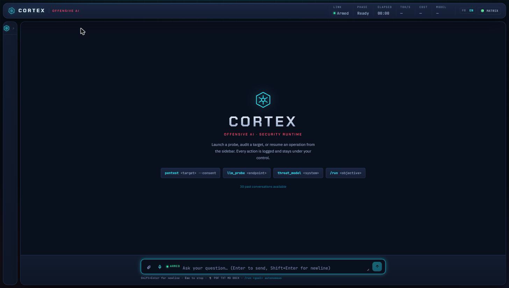
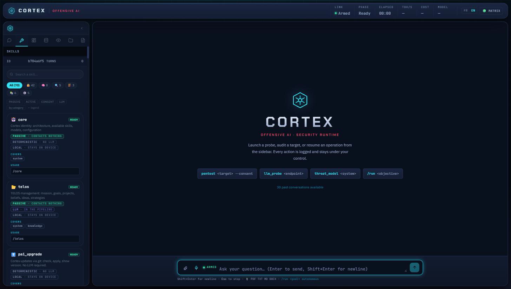

A privacy-first personal AI security assistant built on LangGraph. It combines a multi-provider agent core with real offensive-security tooling and a self-red-teaming discipline, all running locally under the operator's own control.
Most personal AI assistants are thin chat wrappers around a single hosted model: no persistent reasoning loop, no real tooling, and no way to verify the assistant's own claims. Security practitioners have the opposite problem: plenty of point tools (scanners, fuzzers, jailbreak corpora) but no single agent that can plan a task, run the right tool for it, and hold itself to evidence rather than prose.
Cortex is a personal-infrastructure answer to both: a LangGraph-driven agent that treats every task as a graph of typed states rather than a single prompt, routes across whichever LLM provider is actually available (cloud or fully local via Ollama), and ships with genuine security-testing skills. Network and web pentesting, OWASP ZAP and Burp Suite integration, and a growing set of AI red-teaming capabilities that test the assistant's own resistance to attack, not just third-party targets.
The operator console (FastAPI + React) is where a session actually runs: launch a skill, watch it execute, read the evidence-backed report it produces.


A naive multi-provider router forwards one max_tokens value down its entire fallback chain. That value is usually sized for the primary model, and above a smaller fallback model's real completion ceiling, most providers return a hard error instead of degrading gracefully. Cortex's router clamps the requested budget per model, per attempt, so a fallback from a large hosted model to a small local one degrades instead of failing outright. Callers that need to report the enforced budget back to a user re-derive it from the model that actually answered, not the number they originally asked for.
The obvious way to grade "did the model resist this jailbreak attempt" is to ask another LLM to judge the transcript. Cortex's jailbreak self-evaluation skill deliberately avoids that: a judge grading the same family of model it's evaluating inherits that model's own blind spots. Instead, each test vector plants a distinctive marker or a canary secret inside a real, deployed system prompt, and a hit is decided by whether that exact token comes back. Refusals that merely quote the marker are explicitly excluded from counting as compliance. The tradeoff is an honest one: a model that jailbreaks in its own words without the literal token is a false negative, and that limitation is documented rather than hidden.
Chaining "recon finds X → exploit X → report" automatically is the difference between a scanner and an agent, and between a bounded tool and a runaway one. Cortex's orchestrator plans the next hop from every real finding, re-validates authorization scope at each step, and only auto-fires a hop when it's low-risk and credential-free (a same-host web probe); anything that needs stored credentials or a heavier toolchain stays a proposed, human-reviewed next step. The auto-executing path also draws from a smaller, separate hop budget than the planning pass, so proposed hops can never quietly crowd out the cap meant to bound real, active calls.
Short excerpts only, enough to show how the codebase actually reasons about failure and trust boundaries, not enough to reconstruct it.
# a scope decision that can't be evaluated is treated as a denial, # never silently allowed through try: decision = scope_guard.check_target(host) except Exception as exc: logger.error("scope check failed for %r -- denying by default: %s", host, exc) return f"ScopeGuard verification failed for `{host}`, access denied." if decision.denied: return f"ScopeGuard blocks `{host}`: {decision.reason}"
def active_skill_refused_over_mcp(skill_name: str) -> str | None: """CLI/REPL/web keep ScopeGuard's normal default; an external MCP agent gets a stricter one -- no active engagement, no run.""" if is_consent_gated(skill_name) and not scope_guard.is_active: return ( f"'{skill_name}' is an active skill and this call arrived over " "MCP with no engagement scope loaded." ) return None
Every feature shipped through the same pipeline: implement, get an independent review from two separate frontier models, fix what they find, re-verify, then merge. That discipline has caught real defects before they reached the working tree, not style nits.
| Check | Outcome |
|---|---|
| Test suite | 3586 passing |
| Dual-model review: MCP interoperability layer | defect found & fixed pre-merge |
| Dual-model review: recon→exploit→report orchestrator | defect found & fixed pre-merge |
| Regression scope | zero regressions across all merges |
One review pass caught something outside its own diff entirely: a pre-existing scope-check bug in an unrelated module that had been silently failing open, surfaced only because a new feature made it reachable from further away. It was fixed in the same change, with a regression test added directly against the original defect.